This functionality allows to divide the slab and move the material with the vacuum.
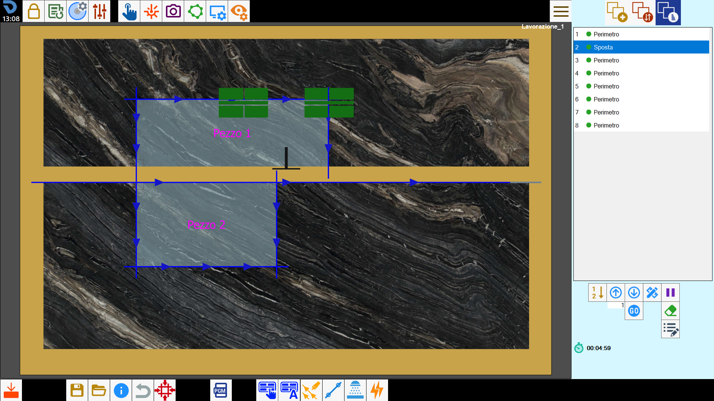
Buttons
 | Manual handling |
 | handling automatic |
Manual handling
Through this function, the operator can split the slab using cuts, and move to the desired position the material by using the vacuum cups.
Based on the number of cuts selected, this function presents two modes.
Single selection mode
To perform a displacement by vacuum, it is necessary to select a cut with disk, both linear and arch, and press the button.
The cut is extended until it reaches the edge of the slab, when possible.
If the selected cut is inclined, a linear cut will be automatically added specifically to be able to divide the slab.
At this point opens the following panel, where it is possible to specify the direction, the way and the distance of the desired shift.
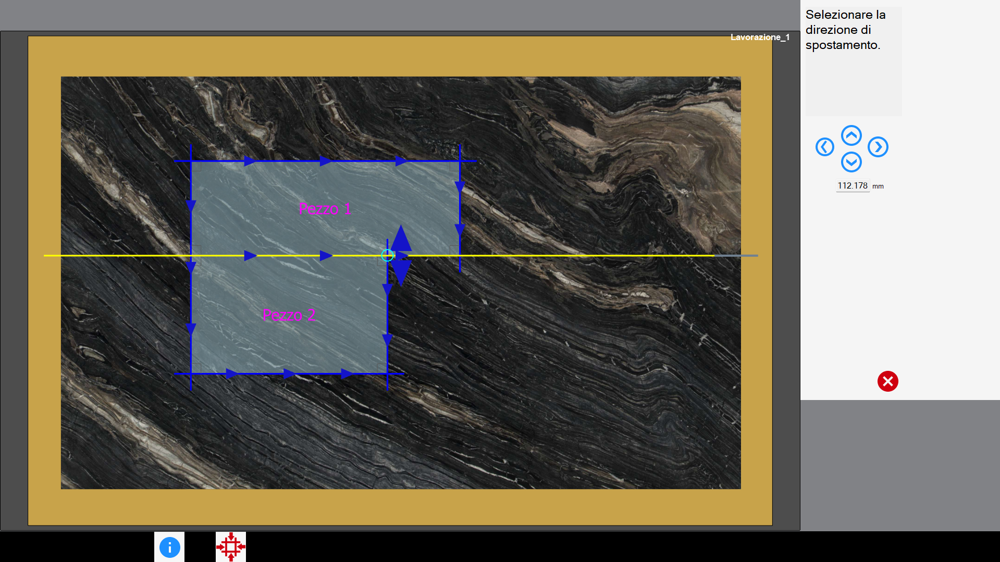
In the right section are present these buttons:
 | Directional Move |
Select an arrow on the working area, or press one of the buttons on the right to decide direction and side of the displacement.
The slab is divided, and moved based on the type of cut that has been selected.
The slab's displacement distance in both cases is editable from the text box located below the four directional buttons.
The selected cut is executed first and positioned at the top of the list of cuts to be made. Immediately after, the movement is performed via suction cups.
Multiple selection mode
The multiple selection mode allows the lifting of pieces with a generic shape. To do this, it is necessary to select the desired cuts to divide the slab using the multiple selection mode.
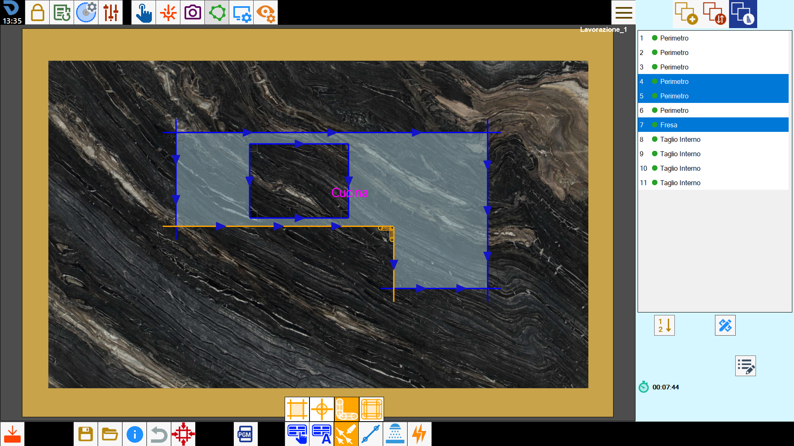
Once the selection is made, you press the button to start the procedure.
The selected cuts are extended, if possible, in order to form a continuous path that could divide the slab. In the case in which one or more of the selected cuts are inclined, these are automatically replaced by straight cuts.
At this point opens the following panel.
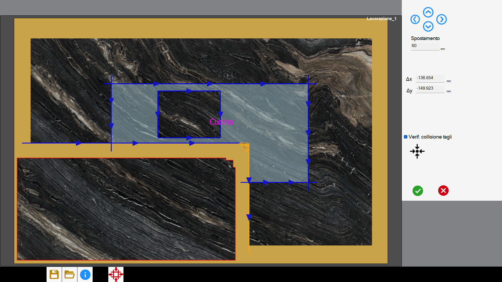
After having chosen the slab to move, it’s possible to decide the move by dragging it on the work area, or using one of the following buttons:
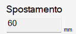 | Step |
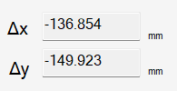 | Movement along axes |
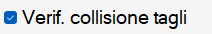 | Checking collision cuts |
Restore original position |
Upon confirmation, the selected cuts are placed at the top of the list of cuts to be made. Immediately after, the move is executed through suction cups.
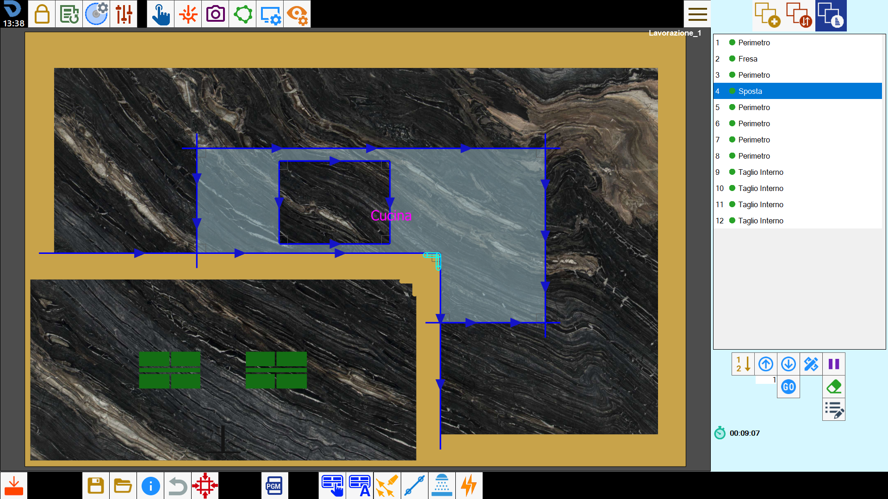
WARNING!The multiple selection mode allows the lifting of generic shaped pieces, and therefore also cantilever pieces. The control on the feasibility of the movement is in charge of the operator.
Rules for valid cuts selection
To be able to correctly divide the slab, it is necessary to observe some indications for the selection of the cuts.
The selected cuts can be cuts with disk, both straight and arc, milling and multiple holes on angle.
The selected cuts must be able to form a path that separates in two the slab. The selection of cuts that form a closed path is not allowed.
The program automatically extends the linear cuts with disk until it finds a solution that allows to divide the slab. The arc cuts, the milling operations and the holes, instead, are not modified automatically.
Considering this, it's advisable that the first and the last cut of the path are straight edge cuts with disk.In presence of internal angles, in which the disk's blade doesn't allow completely separating the material, it is necessary insert milling on vertex or multiple holes.
The penetration of the selected cuts must be sufficient to be able to separate the slab.
The first and last cut must necessarily be able to exit from the slab.
Operation not possible message
In the case in which the operation of handling is not considered possible by the program, the causes can be the following:
The selected cuts are not sufficient to create a path that divides into two the slab;
The chosen cuts form a closed path;
The cuts chosen are not able to detach the piece because of the disk's overhang.
The extension of the selected cuts goes to ruin other pieces;
The penetration of at least one of the selected cuts is not enough to separate the slab;
handling automatic
Through this function, the program will try to solve automatically situations in which one or more pieces on the work area are damaged by other cuts.
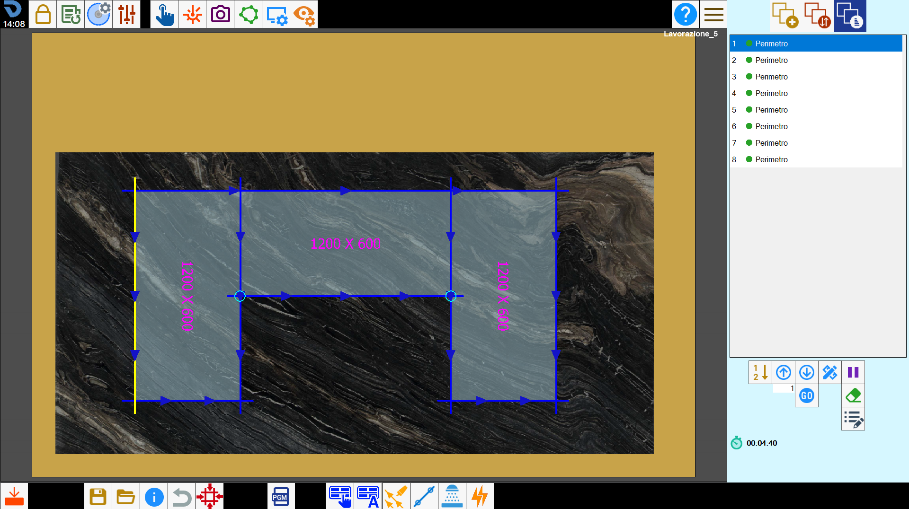
The algorithm analyzes the arrangement of cuts and determines autonomously how and where to make the move, optimizing the sequence of operations.
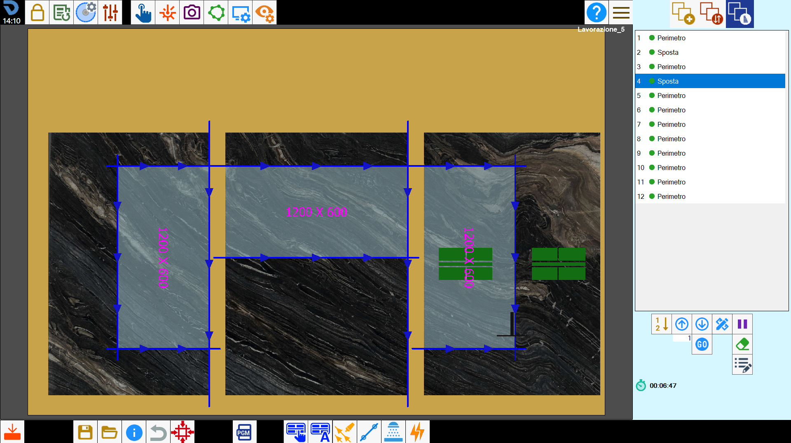
However, it is important to note that automatic calculation is not always able to manage all cases. In particularly complex situations, it may be necessary to intervene manually to complete or correct the movement operations.
Change the position of the vacuum
During this phase, the operator has the ability to change both the vacuum cups taking position and the activation vacuum areas, to ensure an optimal and safe grip on the material.
To do it, select the 'Move' item within the list, and press the button for the cuts’ modification.
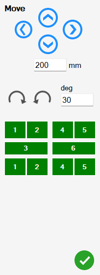
The buttons present in this panel allow the operator to interact with the vacuum.
| Directional Move |
Rotation of the suction cups | |
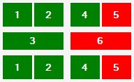 | Suction cups group scheme |